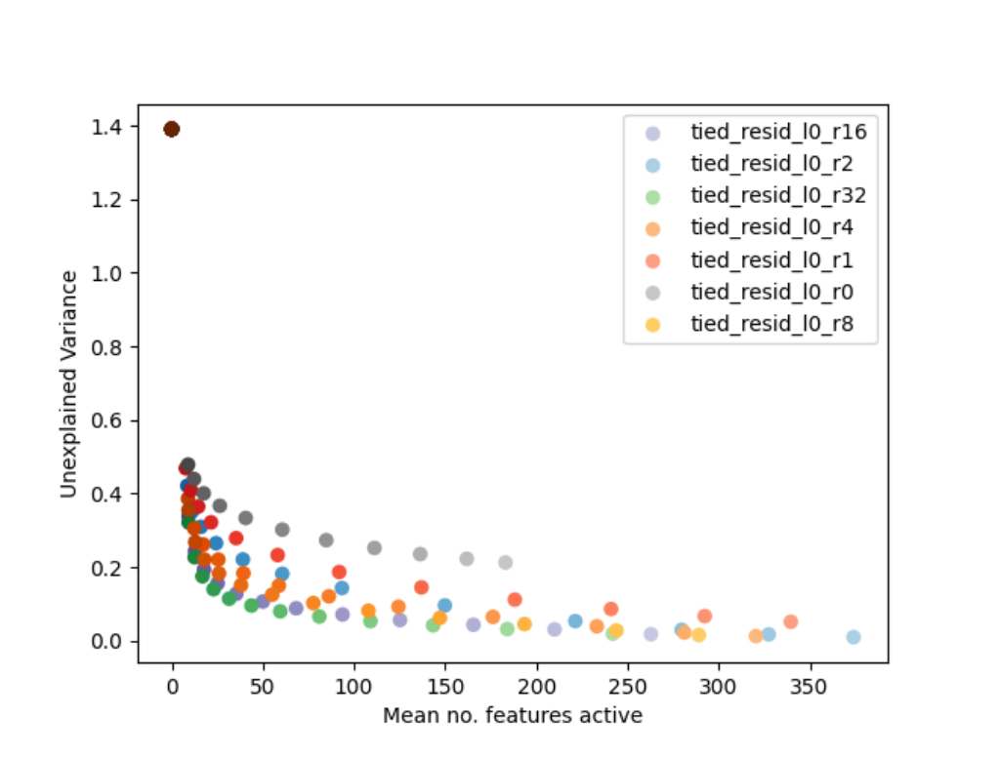

Active-feature count vs. unexplained variance, by dictionary size

Reading the scatter plot
Each point is one trained sparse autoencoder. Its x-position is the mean number of dictionary features simultaneously active on a given input -- lower means a sparser reconstruction. Its y-position is the proportion of the original activation vector's variance the reconstruction fails to capture (unexplained variance): 0 is perfect reconstruction, values near 1 mean almost nothing was captured. Color encodes the dictionary's expansion factor $R$, its hidden size relative to the underlying activation dimension, swept across seven ratios. It is tempting to read this as one model's training trajectory. It is not: each point is a separately trained autoencoder at a different value of the sparsity coefficient $\alpha$ (larger $\alpha$ pushes a point up and to the left, toward fewer active features and worse reconstruction), and each color is a different dictionary size entirely, not a later stage of the same run.
What the sweep shows
Every dictionary size traces the same qualitative shape: unexplained variance drops steeply as active-feature count rises from near zero, then flattens toward a low floor once several hundred features are active, with no sharp bend separating a distinctly 'good' region from a 'bad' one. One extreme point, at essentially zero active features, has unexplained variance near 1.4 -- reconstruction has almost completely collapsed. The paper reads the absence of a knee anywhere along this curve as evidence against there being one single objectively correct sparsity level for decomposing this layer's activations (sparse-autoencoders, §"B SPARSE AUTOENCODER TRAINING AND HYPERPARAMETER SELECTION", p. 12).
Context
This sweep is run on an MLP-sublayer autoencoder, an application the paper elsewhere reports as only partly successful because of many Dead features (see SAE training on the MLP sublayer). The tradeoff itself is the basis for the paper's Sparsity-reconstruction tradeoff (no single correct decomposition) argument, driven by the Sparsity loss (L1 penalty on feature activations) and Reconstruction loss terms competing in training and shaped by the Dictionary expansion factor (R) choice.